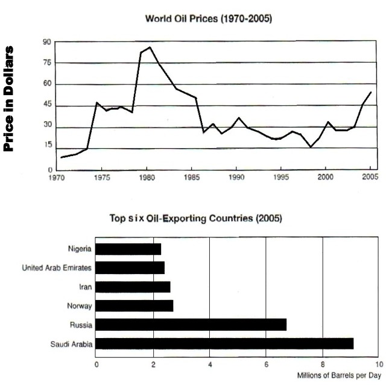

<!-- 원본: ACADEMIC3/writing (레거시 서버에서 2026-11-14 수집, 정답 제거) -->
<div class="legacy-content"><div id="pageContainer">
<div class="page" id="page-0">
<div class="flex flex-col md:flex-row gap-6">
<div class="w-full md:w-1/2">
<h3 class="text-2xl font-bold text-purple-800 mb-4">WRITING TASK 1</h3>
<br/>
<p><i>You should spend about 20 minutes on this task.</i></p>
<br/>
<p style="width:600px"><b>
                                        The first line graph shows the average world oil price each year from
                                        1970-2005.<br/>
                                        The second chart shows the top six oil exporting countries and how much they
                                        export
                                        each day.<br/><br/>
                                        Write a report for a university lecturer describing the information.<br/>
</b>
</p>
<br/>
<p style="width:600px">
                                    You should write at least 150 words.
                                </p>
<br/>
<div style="width:800px; text-align: center; text-indent: 100px;">

</div>
</div>
<div class="w-full md:w-1/2">
<textarea class="notebook-textarea w-full wc" name="task1" placeholder="Write your answer here..." rows="15"></textarea>
<p class="text-purple-700 mt-2">Word Count: <span class="wc-out">0</span></p>
</div>
</div>
</div>
<div class="page" id="page-1">
<div class="flex flex-col md:flex-row gap-6">
<div class="w-full md:w-1/2">
<h3 class="text-2xl font-bold text-purple-800 mb-4">WRITING TASK 2</h3>
<br/>
<p><i>You should spend about 40 minutes on this task.</i></p>
<br/>
<p>Present a written argument or case to an educated reader with no specialist knowledge
                                    of
                                    the following topic</p>
<br/>
<div style="width:600px; border:1px solid #000; padding:10px;"><b>
                                        In modern age, society is changing faster and faster. This accelerating pace of
                                        life
                                        affects our mental and physical health.<br/>
<div style="height:10px"></div>
                                        To what extent do you agree with the statement?<br/>
<div style="height:10px"></div>
                                        Use examples from your own experience to support your answer.
                                        <div style="height:10px"></div>
</b>
</div>
<br/>
<p style="width:600px"><b>
                                        You should write at least 250 words.
                                    </b></p>
</div>
<div class="w-full md:w-1/2">
<textarea class="notebook-textarea w-full wc" name="task2" placeholder="Write your answer here..." rows="15"></textarea>
<p class="text-purple-700 mt-2">Word Count: <span class="wc-out">0</span></p>
</div>
</div>
</div>
<div class="flex justify-center gap-4 mt-6">
</div></div></div>
